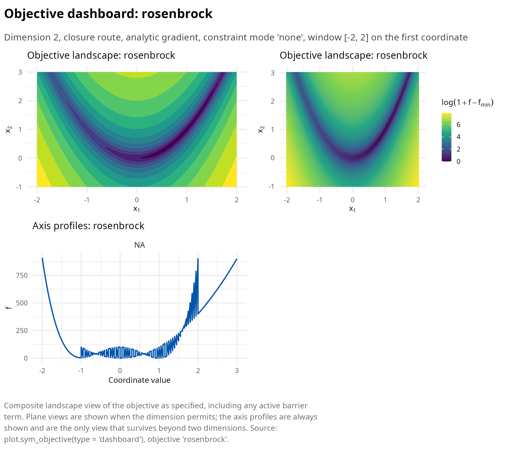
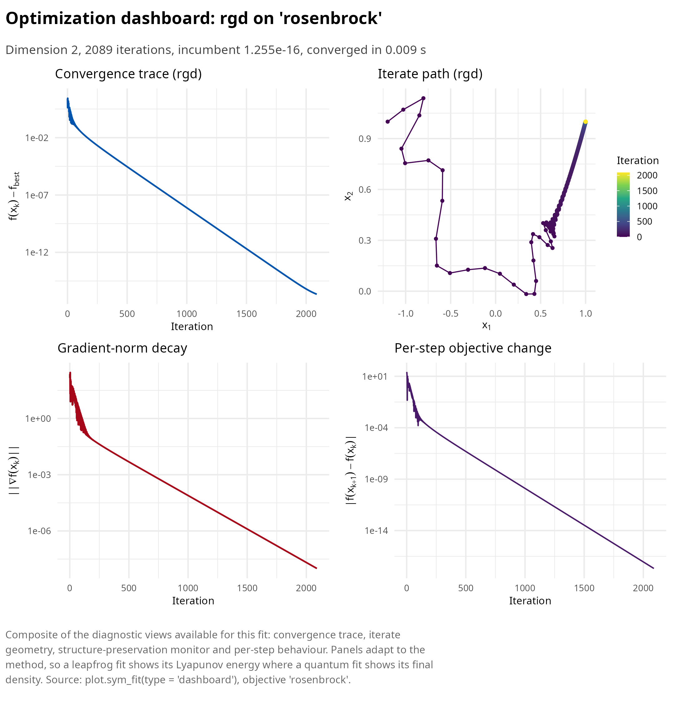
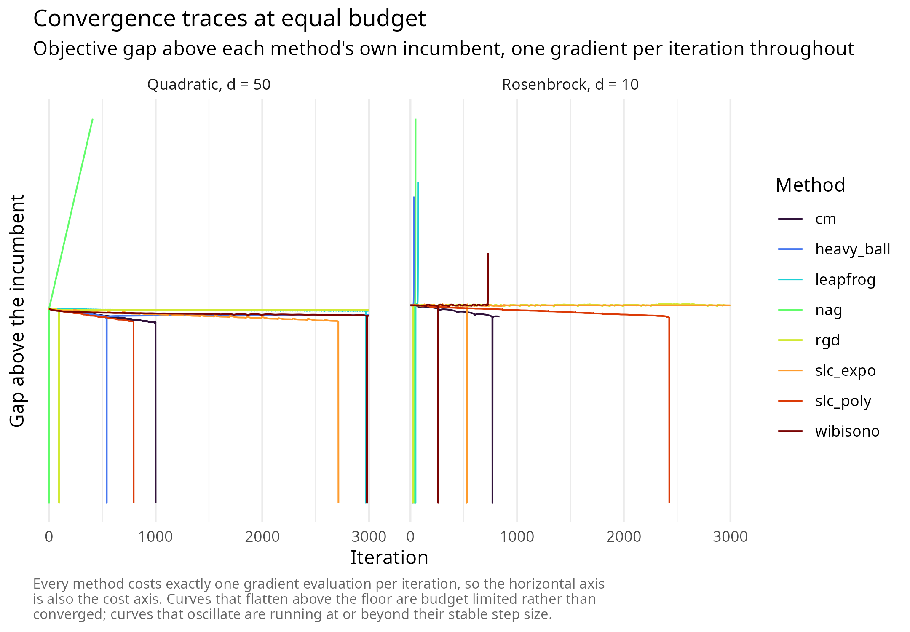
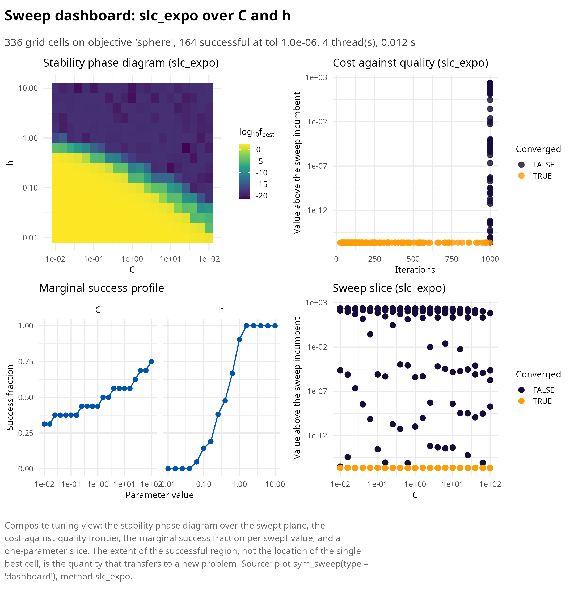
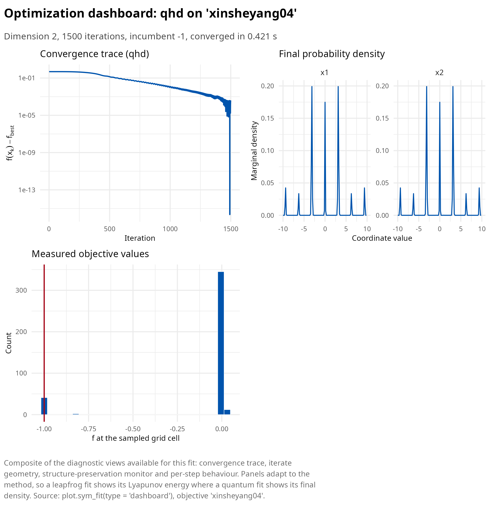
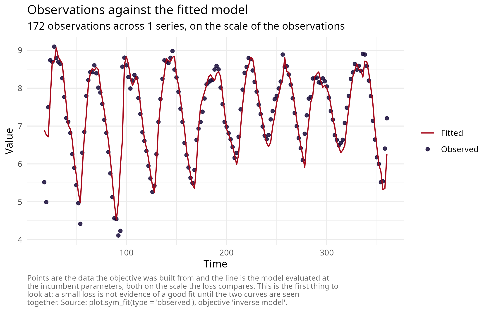
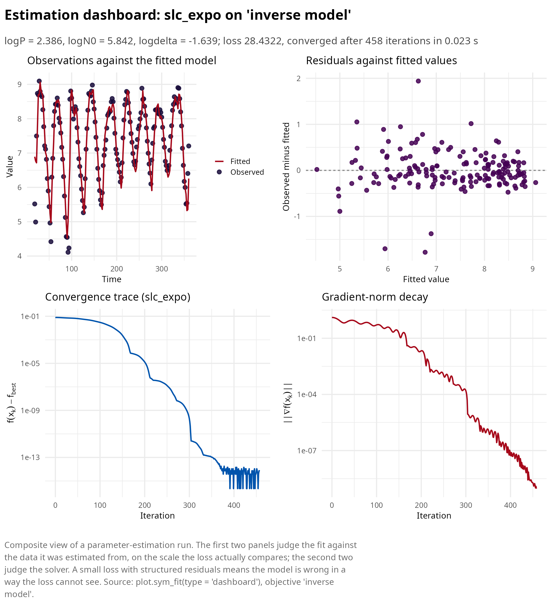
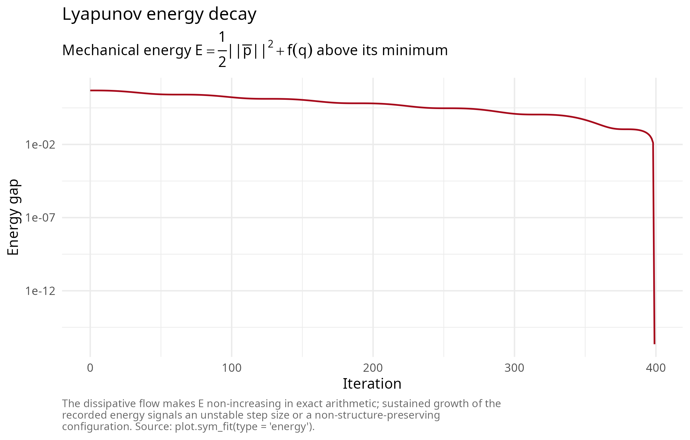

Getting started with symplectoR
Pablo Almaraz, RElab
Source:vignettes/symplectoR.Rmd
symplectoR.RmdsymplectoR implements accelerated gradient optimization as the numerical integration of continuous dissipative Hamiltonian systems. The design premise, taken from the research program of Wibisono, Wilson and Jordan [1] and its symplectic developments [2], [3], [4], is that acceleration is not an algorithmic trick but a property of a damped Hamiltonian flow, and that discretizations preserving the flow’s geometric structure inherit its convergence rate while remaining stable at far larger step sizes than the classical Nesterov iteration. Every solver in the package costs one gradient evaluation per iteration, and every quantitative claim in the documentation is backed by a regression test against analytic ground truth.
This vignette is the practical tour: how to specify a problem, how to choose among the solvers, how to tune the two parameters that matter, and how to read the diagnostics. The mathematics behind the choices is developed in the theory article, and each method family has its own article with validation figures.
The variational premise in one page
Every accelerated method in the package descends from a single variational object. Given a distance-generating function \(h\) with Bregman divergence \(D_h(y, x) = h(y) - h(x) - \langle \nabla h(x), y - x \rangle\), the Bregman Lagrangian is
\[\mathcal{L}(X, V, t) = e^{\alpha_t + \gamma_t}\left( D_h\left(X + e^{-\alpha_t} V,\, X\right) - e^{\beta_t} f(X) \right),\]
with three time scalings \(\alpha_t\), \(\beta_t\), \(\gamma_t\). Under the ideal scaling conditions \(\dot\beta_t \le e^{\alpha_t}\) and \(\dot\gamma_t = e^{\alpha_t}\), every solution of the Euler-Lagrange equation satisfies
\[f(X_t) - f^\star = O\!\left(e^{-\beta_t}\right),\]
because the energy \(\mathcal{E}_t = D_h(x^\star,\, X_t + e^{-\alpha_t}\dot X_t) + e^{\beta_t}(f(X_t) - f^\star)\) is non-increasing along the flow. Two consequences drive the package design. First, arbitrary convergence rates are available in continuous time simply by reparameterizing \(\beta_t\), so nothing interesting happens at the level of the flow: the entire difficulty lives in the discretization, and naive explicit Euler on these flows is provably unstable. Second, since the flow is Hamiltonian after a Legendre transform, the discretization question becomes a question in geometric numerical integration, where structure preservation is the established answer.
The Legendre transform gives the Bregman Hamiltonian, which in the Euclidean separable case is
\[H(q, r, t) = \tfrac{1}{2} e^{\alpha_t - \gamma_t}\lVert r \rVert^2 + e^{\alpha_t + \beta_t + \gamma_t} f(q).\]
Family B integrates this object directly. Family A integrates its autonomous relative, a mechanical Hamiltonian with explicit friction. Family C quantizes it.
The objective as the single currency
Solvers never see raw functions. The constructor
sym_objective() wraps an R closure (or a compiled function
pointer from sym_compile()) together with the dimension,
optional box constraints and the gradient; a central finite-difference
gradient is generated when none is supplied, at a cost of \(2d\) objective evaluations per
gradient.
library(symplectoR)
obj <- sym_objective(
f = function(x) 100 * (x[2] - x[1]^2)^2 + (1 - x[1])^2,
grad = function(x) c(-400 * x[1] * (x[2] - x[1]^2) - 2 * (1 - x[1]),
200 * (x[2] - x[1]^2)),
dim = 2, lower = c(-2, -1), upper = c(2, 3), name = "rosenbrock"
)
obj
#> ¡ symplectoR objective 'rosenbrock'
#> ⚙ Dimension: 2; route: R closure (serial); analytic gradient
#> ⚙ Box: [-2, -1] x [2, 3]
#> ⚙ Constraint handling: noneEvery object in the package carries the full print, summary and plot
trio, and every plot method exposes a "dashboard" view that
assembles the informative panels for the object at hand. For an
objective this means the landscape where the dimension permits it, plus
the axis profiles, which remain meaningful in any dimension and make
ill-conditioning directly visible as differing curvature between
panels.
plot(obj, type = "dashboard", n = 81)
The compiled route matters whenever OpenMP parallelism is wanted: R closures are structurally excluded from parallel regions because the interpreter is not thread safe, whereas compiled objectives evaluate pure C++ inside multi-start ensembles, parameter sweeps and the quantum grid.
co <- sym_compile("return 0.5 * arma::dot(x, x);", "return x;")
objc <- sym_objective(co, dim = 50, lower = -5, upper = 5, name = "sphere")
objc
#> ¡ symplectoR objective 'sphere'
#> ✔ Dimension: 50; route: compiled (thread safe); analytic gradient
#> ⚙ Box: [-5, -5, -5, -5] x [5, 5, 5, 5] (first 4 coordinates)
#> ⚙ Constraint handling: noneOne optimizer, three families
sym_optim() dispatches to every kernel. The nine method
names group as follows.
| Method | Family | Order | Tune first | Notes |
|---|---|---|---|---|
rgd |
A, conformal symplectic | first (gradient) |
eps, delta
|
Master kernel; relativistic step bound \(1/\sqrt{\delta}\) |
nag |
A, conformal symplectic | first (gradient) |
eps, mu
|
Exact preset of rgd at \(\delta = 0\), \(\alpha = 0\)
|
heavy_ball |
A, conformal symplectic | first (gradient) |
eps, mu
|
Exact preset at \(\delta = 0\), \(\alpha = 1\) |
cm |
A, conformal symplectic | first (gradient) |
eps, mu
|
Classical momentum, first-order form |
leapfrog |
A, conformal symplectic | first (gradient) |
h, gamma
|
General damping schedules; records the Lyapunov energy |
slc_poly |
B, Bregman | first (gradient) |
C, h
|
Rate \(O(1/t^p)\); restart and looping on by default |
slc_expo |
B, Bregman | first (gradient) |
C, h
|
Rate \(O(e^{-\eta t})\); the usual first choice |
wibisono |
B, Bregman | first (gradient) |
eps, C
|
Carries an explicit estimate-sequence certificate |
qhd |
C, quantum | zeroth (values only) |
N_grid, T_evol
|
Global, non-smooth, needs a finite box, \(d \le 3\) |
The single most useful default is "slc_expo": it is
fully explicit, costs one gradient per iteration, carries both
safeguards, and its two tunable parameters have a convergent region that
is nearly independent of the problem dimension.
fit <- sym_optim(obj, x0 = c(-1.2, 1), method = "rgd",
control = sym_control("rgd", eps = 0.001, delta = 10, max_iter = 20000),
keep_path = "full")
summary(fit)
#> ¡ symplectoR fit (rgd)
#> ⚙ Objective: rosenbrock (dimension 2)
#> ✔ Best value: 1.25527e-16 after 2089 iterations
#> ✔ Status: Converged
#> ¡ Evaluations: 2091 objective, 2090 gradient
#> ⏱ Wall time: 0.009 s
#>
#> Incumbent coordinates:
#> ✔ x[1] = 1
#> ✔ x[2] = 1
#> ✔ Final gradient norm: 9.97e-09
#> ¡ Objective drop over the last 10 recorded iterates: 2.25e-17
#> ⚙ Trust-region bound 1/sqrt(delta) = 0.3162, saturated on 0.0% of steps
plot(fit, type = "dashboard")
Choosing a method
The honest comparison is empirical, on the problem at hand, at a fixed evaluation budget. The block below runs every trajectory method on one conditioned quadratic and one Rosenbrock valley from the same start with the same budget, and tabulates what each achieved.
compare <- function(objective, x0, budget = 3000) {
specs <- list(
rgd = sym_control("rgd", eps = 0.002, mu = 0.95, delta = 4, max_iter = budget),
nag = sym_control("nag", eps = 0.002, mu = 0.95, max_iter = budget),
heavy_ball = sym_control("heavy_ball", eps = 0.002, mu = 0.95, max_iter = budget),
cm = sym_control("cm", eps = 0.002, mu = 0.95, max_iter = budget),
leapfrog = sym_control("leapfrog", h = 0.05, gamma = 1, damping = "mixed", max_iter = budget),
slc_poly = sym_control("slc_poly", C = 0.1, h = 0.01, max_iter = budget),
slc_expo = sym_control("slc_expo", C = 1, h = 4, max_iter = budget),
wibisono = sym_control("wibisono", eps = 0.002, N = 2, C = 0.0625, max_iter = budget)
)
fits <- lapply(names(specs), function(m)
sym_optim(objective, x0 = x0, method = m, control = specs[[m]]))
names(fits) <- names(specs)
status <- function(f) if (f$diverged) "diverged" else if (f$converged) "converged" else "budget reached"
list(fits = fits, table = data.frame(
Method = names(fits),
## Formatted as text: several methods reach values below 1e-20, which a
## fixed number of decimal places would silently print as an exact zero.
`Final value` = formatC(vapply(fits, function(f) f$f_best, numeric(1)), format = "e", digits = 3),
Iterations = vapply(fits, function(f) f$n_iter, numeric(1)),
Gradients = vapply(fits, function(f) f$n_grad, numeric(1)),
Status = vapply(fits, status, character(1)),
`Seconds` = round(vapply(fits, function(f) f$timing, numeric(1)), 3),
check.names = FALSE, row.names = NULL))
}
quad <- sym_objective(sym_benchmark("quadratic", d = 50, kappa = 1000, seed = 1))
cmp_q <- compare(quad, rep(0, 50))| Method | Final value | Iterations | Gradients | Status | Seconds |
|---|---|---|---|---|---|
| rgd | 5.494e+01 | 3000 | 3000 | budget reached | 0.010 |
| nag | 3.561e+03 | 411 | 412 | diverged | 0.001 |
| heavy_ball | 2.702e+03 | 3000 | 3000 | budget reached | 0.011 |
| cm | 6.331e-20 | 1000 | 1001 | converged | 0.003 |
| leapfrog | 7.437e-01 | 3000 | 3001 | budget reached | 0.021 |
| slc_poly | 2.812e-17 | 794 | 795 | converged | 0.002 |
| slc_expo | 3.111e-17 | 2714 | 2715 | converged | 0.008 |
| wibisono | 1.359e-07 | 3000 | 6000 | budget reached | 0.013 |
rosen <- sym_objective(sym_benchmark("rosenbrock", d = 10))
cmp_r <- compare(rosen, rep(0, 10))| Method | Final value | Iterations | Gradients | Status | Seconds |
|---|---|---|---|---|---|
| rgd | 5.042e+00 | 3000 | 3000 | budget reached | 0.014 |
| nag | 4.380e+00 | 49 | 50 | diverged | 0.000 |
| heavy_ball | 5.066e+00 | 34 | 35 | diverged | 0.000 |
| cm | 1.492e-18 | 835 | 836 | converged | 0.003 |
| leapfrog | 1.310e+00 | 72 | 73 | diverged | 0.000 |
| slc_poly | 9.701e-17 | 2427 | 2428 | converged | 0.008 |
| slc_expo | 4.133e+00 | 3000 | 3001 | budget reached | 0.013 |
| wibisono | 1.832e+00 | 728 | 1458 | diverged | 0.004 |
Two features of these tables deserve reading rather than skimming. The status column separates a method that met its tolerance from one that merely exhausted its budget or diverged, and those are very different outcomes at the same reported value. And every method spends exactly one gradient per iteration except the rate-matching scheme, which spends two, so the iteration column is also the cost column and the comparison is like for like.
Plotting the traces on one axis shows what the table compresses: the methods differ less in their asymptotic slope than in where they stop making progress and how violently they oscillate on the way.

A decision rule that survives contact with real problems:
| Problem feature | Start with | Tune |
|---|---|---|
| Smooth, unconstrained, any dimension | slc_expo |
C, h
|
| Smooth but badly conditioned or sloppy |
slc_expo, then rgd to
polish |
C, h; then eps,
mu
|
| Need a hard bound on the step |
rgd with delta set |
eps, delta
|
| Need a certified rate | wibisono |
eps, C at most \(1/(8N)\)
|
| Nonautonomous or explicitly time-dependent damping |
leapfrog with
damping = "mixed"
|
h, gamma,
gamma2
|
| Non-smooth, boxed, at most three free parameters | qhd |
N_grid, T_evol
|
| Non-smooth, more than three parameters | multi-start slc_expo via
n_starts
|
n_starts, C,
h
|
| Multimodal likelihood, two or three dominant parameters |
qhd, then slc_expo from its
incumbent |
N_grid, then C,
h
|
Tuning lives in a two-parameter plane
For the Bregman methods the source tuning study reduces the problem
to two numbers: fix the family order (p = 6 for the
polynomial family, eta = 0.01 for the exponential one) and
tune only the pair \((C, h)\). Small
\(C\) suppresses the oscillatory
perturbation of the underlying monotone flow and thereby admits much
larger steps. sym_sweep() maps the plane in one call,
running one full solver per grid cell in parallel for compiled
objectives.
sw <- sym_sweep(objc, "slc_expo",
grid = list(C = 10^seq(-2, 2, 0.2), h = 10^seq(-2, 1, 0.2)),
x0 = rep(3, 50), n_threads = 4,
control = sym_control("slc_expo", max_iter = 1000, tol_grad = 1e-9))
sw
#> ¡ symplectoR sweep (slc_expo over C, h)
#> ⚙ Objective: sphere; grid size 336
#> ✔ Converged: 164; diverged: 0; success at tol 1.0e-06: 164
#> ✔ Incumbent cell: C = 25.12, h = 0.631 with f = 4.56516e-22 in 255 iterations
#> ⏱ Threads: 4; wall time: 0.012 s
plot(sw, type = "dashboard")
The quantity to read off is the extent of the successful region, not the location of the single best cell. The convergent region of the \((C, h)\) plane is nearly independent of the problem dimension, so a sweep on a cheap low-dimensional analogue transfers to the production problem; the location of the optimum does not.
Global optimization of non-smooth objectives
Family C evolves a probability density rather than a point. The state is a complex field on an \(N^d\) grid over the periodic box; each step applies a potential phase, transforms to Fourier space, applies a kinetic phase, and transforms back. The method queries only function values, so non-smooth objectives are first class, and the schedule \(\lambda(t)\) interpolates from exploration to exploitation. The twelve non-smooth test functions of the source paper ship with their published ground truth.
| name | dim | f_star | box |
|---|---|---|---|
| wf | 2 | 0.0000000 | [-10..10, -10..10] |
| crownedcross | 2 | 0.0001000 | [-10..15, -10..15] |
| bukin06 | 2 | 0.0000000 | [-15..-5, -3..3] |
| keane | 2 | -0.6736675 | [1e-08..10, 1e-08..10] |
| schwefel | 1 | 0.0000000 | [-500..500] |
| ackley | 2 | 0.0000000 | [-15..30, -15..30] |
bm <- sym_benchmark("xinsheyang04")
gfit <- sym_optim(sym_objective(bm), method = "qhd", seed = 42,
control = sym_control("qhd", N_grid = 128, K = 1500, n_samples = 400))
c(recovered = gfit$f_best, published = bm$f_star)
#> recovered published
#> -1 -1
plot(gfit, type = "dashboard")
The hard limits are honest and enforced. Memory grows as \(N^d\), so the dimension is capped at three and the cell count at \(2^{24}\), with an explicit memory estimate in the error message; and the attainable accuracy is bounded below by the grid spacing, which is visible on functions with a sharp cusp at the minimizer.
Inverse modeling on empirical data
sym_inverse() converts a model-plus-data estimation
problem into an objective over the parameter vector. Two forms are
supported: a plain prediction function of the parameters, and a
janos dynamical system fitted by trajectory matching. Two
empirical ecological series ship with the package for this purpose.
The Nicholson blowfly cages are the classic record of delayed density dependence. The mechanistic model makes recruitment depend on the adult population one development time in the past,
\[N_{t+1} = P\, N_{t-k}\, e^{-N_{t-k}/N_0} + N_t e^{-\delta},\]
on the two-day sampling grid with \(k = 7\). Because the dynamics are aperiodic and the record is noisy, matching a simulated trajectory to the whole 360-day series would compare phases that decohere long before the end; conditional one-step-ahead prediction avoids that by conditioning each prediction on the observed state.
main <- subset(nicholson_blowfly, population == "main")
N <- main$count
k <- 7L
idx <- seq.int(k + 1L, length(N) - 1L)
predict_step <- function(theta) {
log(exp(theta[1]) * N[idx - k] * exp(-N[idx - k] / exp(theta[2])) +
N[idx] * exp(-exp(theta[3])) + 1)
}
obj_bf <- sym_inverse(predict_step, data = log(N[idx + 1L] + 1),
obs_times = main$day[idx + 1L],
theta_bounds = list(
lo = c(logP = log(0.05), logN0 = log(50), logdelta = log(0.005)),
hi = c(logP = log(50), logN0 = log(20000), logdelta = log(3))))
obj_bf
#> ¡ symplectoR objective 'inverse model'
#> ⚙ Dimension: 3; route: R closure (serial); finite-difference gradient
#> ⚙ Box: [-2.99573, 3.91202, -5.29832] x [3.91202, 9.90349, 1.09861]
#> ⚙ Constraint handling: reflectThree free parameters is exactly the dimension ceiling of the quantum solver, so the whole box can be scanned globally before any local method is started. The two stages have complementary failure modes: the global scan cannot resolve below its grid spacing, and the local method cannot escape the basin it starts in.
global <- sym_optim(obj_bf, method = "qhd", seed = 1,
control = sym_control("qhd", N_grid = 48, K = 1200))
refined <- sym_optim(obj_bf, x0 = global$x_best, method = "slc_expo",
control = sym_control("slc_expo", C = 0.1, h = 1.5,
max_iter = 3000, tol_grad = 1e-9))
reference <- stats::optim(global$x_best, function(p) sum((predict_step(p) - log(N[idx + 1L] + 1))^2),
method = "L-BFGS-B",
lower = obj_bf$lower, upper = obj_bf$upper,
control = list(maxit = 1000, factr = 1e2))| Stage | Loss | P | N0 | delta |
|---|---|---|---|---|
| Quantum global scan | 28.51143 | 8.89140 | 368.4031 | 0.18268 |
| Symplectic refinement | 28.43223 | 10.86860 | 344.5695 | 0.19423 |
| L-BFGS-B reference | 28.43223 | 10.86862 | 344.5693 | 0.19423 |
Because sym_inverse() remembers the observations and the
prediction map, the fit plots against its own data with no bookkeeping:
the "observed" view shows the record and the fitted model
together, and the estimation dashboard leads with the data rather than
with the solver.
plot(refined, type = "observed")
plot(refined, type = "dashboard")
The second shipped series, paramecium_didinium, is a
controlled predator-prey microcosm and is fitted by trajectory matching
of a janos system through the system_spec
method of sym_inverse(); the inverse-modeling article
develops that workflow, including the comparison between the
Lotka-Volterra and Rosenzweig-MacArthur models.
Reading the diagnostics
Three habits catch most solver pathologies before they contaminate a result. Read the status line: a run that reports the iteration budget rather than convergence has not converged, whatever its value looks like. Read the energy panel for the leapfrog family: the dissipative flow makes the mechanical energy non-increasing in exact arithmetic, so sustained growth means the step size is unstable. Read the per-step increment panel: isolated spikes are momentum restarts and temporal-looping events, and a plateau at the machine floor is arithmetic stagnation rather than convergence.
lf <- sym_optim(sym_objective(sym_benchmark("damped_oscillator", gamma_damp = 0.2, q0 = 10)),
x0 = 10, method = "leapfrog",
control = sym_control("leapfrog", h = 0.05, gamma = 0.2,
damping = "constant", max_iter = 400, tol_grad = 0),
keep_path = "full")
plot(lf, type = "energy")
Where to go next
The pkgdown articles develop each family with its theory, validation figures and tuning guidance: conformal symplectic and relativistic optimization; Bregman dynamics with restarting and temporal looping; quantum Hamiltonian descent; the inverse-modeling workflow with the RElab ecosystem bridges; and a mathematical companion collecting the derivations, the symbol glossary and the literature.
References
[1] Wibisono, A., Wilson, A. C., & Jordan, M. I. (2016). A variational perspective on accelerated methods in optimization. Proceedings of the National Academy of Sciences, 113(47), E7351-E7358. https://doi.org/10.1073/pnas.1614734113
[2] Franca, G., Sulam, J., Robinson, D. P., & Vidal, R. (2020). Conformal symplectic and relativistic optimization. Advances in Neural Information Processing Systems, 33, 16916-16926. https://proceedings.neurips.cc/paper/2020/hash/c4b108f53550f1d5967305a9a8140ddd-Abstract.html
[3] Franca, G., Jordan, M. I., & Vidal, R. (2021). On dissipative symplectic integration with applications to gradient-based optimization. Journal of Statistical Mechanics: Theory and Experiment, 2021(4), 043402. https://doi.org/10.1088/1742-5468/abf5d4
[4] Duruisseaux, V., & Leok, M. (2023). Practical perspectives on symplectic accelerated optimization. Optimization Methods and Software, 38(6), 1230-1268. https://doi.org/10.1080/10556788.2023.2214837
[5] Leng, J., Zheng, Y., Jia, Z., Fan, L., Zhao, C., Peng, Y., & Wu, X. (2025). Quantum Hamiltonian descent for non-smooth optimization. arXiv preprint arXiv:2503.15878. https://doi.org/10.48550/arXiv.2503.15878
[6] Nicholson, A. J. (1957). The self-adjustment of populations to change. Cold Spring Harbor Symposia on Quantitative Biology, 22, 153-173. https://doi.org/10.1101/sqb.1957.022.01.017